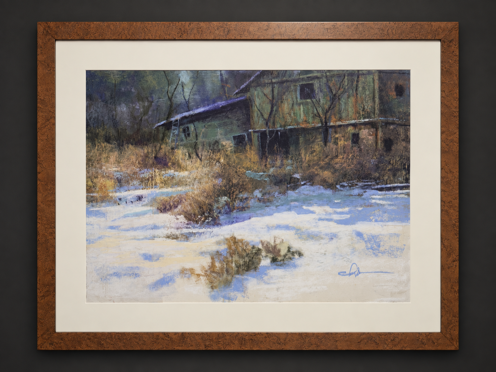

AMBLESIDE ARTIST
Tom Christopher
Pastel · Painting · Drawing
FEATURED WORK

Abandon Acreage
Tom Christopher
THE ARTIST
From
Hollywood
to Manhattan.
Tom Christopher is a classically trained draughtsman whose career has moved between illustration, journalism, painting and the observation of everyday life.
Born in Hollywood, Christopher studied at Art Center College of Design in Pasadena, where his training emphasized rigorous drawing and direct visual observation.
His early professional life included work for Motor Trend, CBS Records, Disneyland and editorial illustration before he moved to New York in 1981.
There, courtroom assignments and constant sketching of streets, subways and buildings helped form the narrative quality that would become central to his mature work.
THE CITY
“Monet had his water lilies and Tom Christopher has Times Square.”
NEW YORK
The city
became the
subject.
In the late 1980s, Christopher experienced what he described as an epiphany while walking through Times Square.
Light, traffic, buildings, messengers and crowds suddenly became a moving field of color and energy — a visual language he felt compelled to capture.
New York became both subject and structure: not simply a cityscape, but a setting for stories about movement, isolation, spectacle and human behavior.
That narrative instinct grew naturally from his earlier work as a courtroom and editorial illustrator, where observation had to become image almost immediately.
PROCESS
Drawing
underneath
everything.
Christopher's work often reveals its own construction. Initial pencil lines may remain visible beneath washes, brushwork and heavier passages of color.
Rather than disguising those marks, he allows open areas and unfinished lines to become part of the finished image.
His visual vocabulary moves freely between delicate washes, looping lines, dense texture, impasto and expressive strokes.
Across both city scenes and quieter landscapes, observation remains the foundation.
SELECTED WORKS
The Collection
CAREER
Selected Milestones
Worked at Disneyland in Anaheim, drawing portraits in New Orleans Square.
Received a CBS Gold Record for album and poster artwork.
Moved to New York City.
Worked as an illustrator for People, Fortune and The Wall Street Journal, and as a courtroom artist for CBS News.
Silver Medal recipient.
Created a 225 × 65 ft outdoor mural with at-risk youth in New York City.
COLLECT